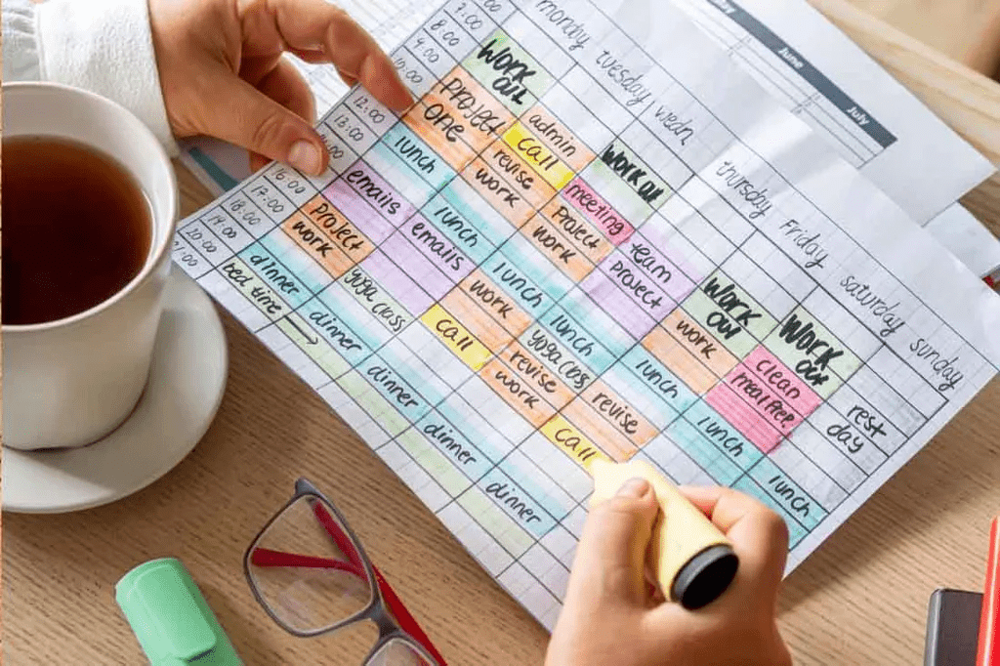
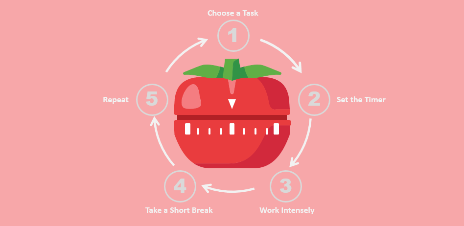
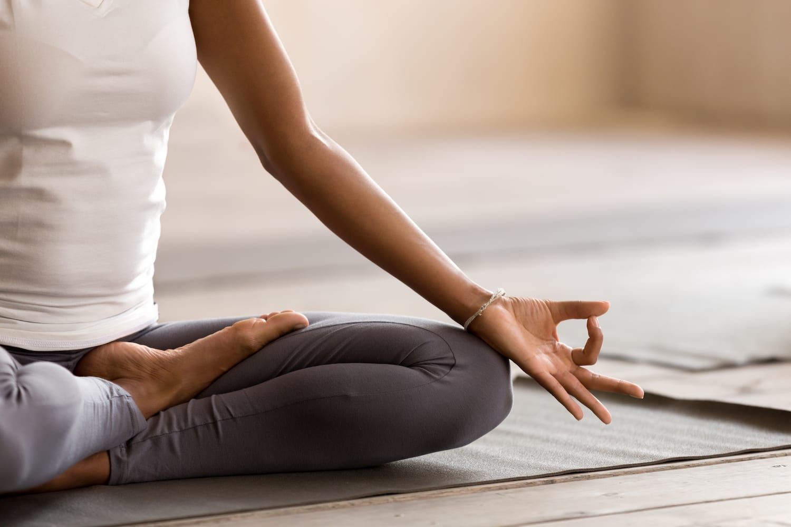

Managing Stress: Essential Tips for Students
As a student, balancing schoolwork, extracurricular activities, and personal life can feel overwhelming. Stress is a common part of student life, but if not managed properly, it can affect both mental and physical health. Here are some practical tips to help students manage stress and stay healthy.
Effective time management is crucial in reducing stress. Break your tasks down into smaller, manageable chunks, and set realistic deadlines for yourself. Using tools like planners or digital apps can help you stay on top of your responsibilities without feeling overwhelmed. By organizing your day in advance, you can allocate sufficient time for each task without panicking. Don't forget to set aside time for relaxation too, as it's an important part of staying balanced.
Many students find it helpful to tackle harder tasks in the morning when their energy levels are higher. Plan your day with this in mind, and remember that prioritizing isn't just about doing more—it's about doing what's most important.
It might be tempting to power through long study sessions, but taking breaks is essential for maintaining focus and productivity. Try the Pomodoro Technique—25 minutes of focused work followed by a 5-minute break. Short breaks give your mind a chance to relax and recharge. When you return to your work, you'll feel refreshed and more capable of retaining information. Taking a walk, stretching, or even grabbing a quick snack can help reset your brain for the next study session.
It's not just about breaks, but about the quality of the rest you take. Try to incorporate light physical movement into your breaks to keep the blood flowing and to boost your energy.
Incorporating relaxation techniques like deep breathing, meditation, or even yoga can significantly reduce stress levels. These practices help calm the mind and body, making it easier to deal with academic pressures. Just 10 minutes of mindfulness or meditation a day can make a difference. Even simple breathing exercises, such as inhaling deeply through the nose and exhaling slowly through the mouth, can calm your nervous system and reduce anxiety.
Students often think that they don't have time for these techniques, but the reality is that they can improve your efficiency by helping you maintain a calm and focused mind. Consider starting your day with a short meditation session for maximum benefits.
Physical exercise is one of the most effective ways to combat stress. Regular movement helps release endorphins, which are the body's natural mood elevators. Whether it's a quick workout, a run, or even a walk around campus, staying active can help clear your mind and reduce tension. Aim for at least 30 minutes of physical activity a day. This doesn't have to be high-intensity; even a casual stroll outside can help refresh your mind.
Exercise is not just about staying fit—it can be a mental reset button. Even if you feel like you don't have time, a 15-minute jog can help you return to your work with a clearer mind.
Social support plays a key role in managing stress. Whether it's talking to friends, family, or even counselors, sharing your feelings can help reduce the burden. Don't hesitate to seek support when you need it—sometimes just talking to someone can provide relief. Surround yourself with a positive support system, and don't be afraid to share your thoughts and emotions when things get tough. You're never alone, and sometimes a fresh perspective is all you need to tackle a problem.
On especially tough days, reaching out to others can make all the difference. Studies have shown that people with strong social ties tend to manage stress better and maintain a more positive outlook.
Sleep is essential for both academic performance and mental health. Lack of sleep can heighten stress and make it harder to concentrate. Make sure to get 7-9 hours of sleep every night to keep your body and mind functioning optimally. Establish a regular bedtime routine, and avoid stimulating activities like studying or using electronic devices right before bed. This can help signal to your body that it's time to wind down, making it easier to fall asleep.
It's not just about the number of hours of sleep, but the quality of sleep too. Consider investing in a good pillow or maintaining a consistent sleep schedule to maximize rest and minimize stress.
Stress is a natural part of student life, but with the right strategies, it can be managed effectively. By balancing your time, staying active, practicing relaxation techniques, and staying connected with loved ones, you can reduce stress and focus on enjoying your student experience. Remember, it's okay to ask for help if you need it. Managing stress is a journey, and finding what works best for you can make all the difference in your overall well-being.